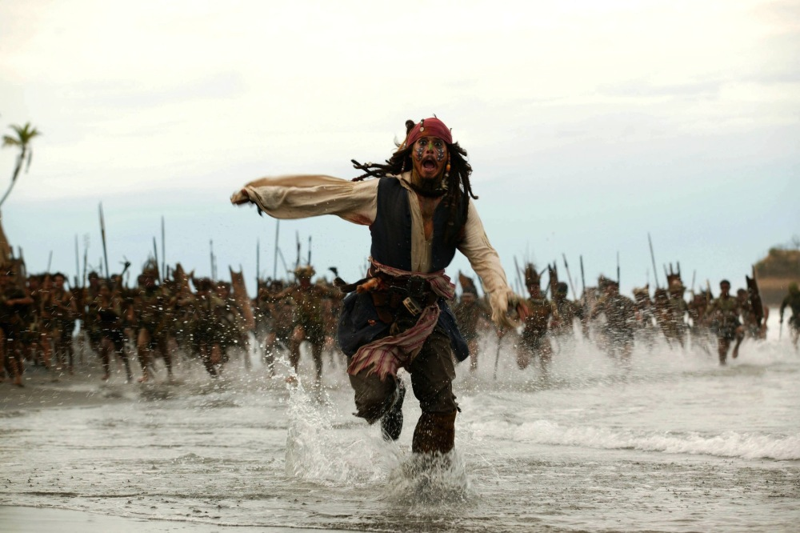

Pirati s Kariba: Mrtvačeva škrinja (eng. Pirates of the Caribbean: Dead Man's Chest)
nastavak
je filma Pirati s Kariba: Prokletstvo Crnog bisera. Premijera je održana 25.6.2006. u Los
Angelesu. Za prva tri dana prikazivanja zaradio je 135,634,554 $ rušeći sve rekorde gledanosti.
Do danas je u cijelom svijetu zaradio preko 1 milijardu $ i tako stao uz bok filmovima poput
Titanica i Gospodar prstenova: Povratak kralja, dok ga je u Hrvatskoj pogledalo preko 100,000
gledatelja.
Film je oborio gotovo sve box-office rekorde i postao 3. najuspješniji film po zaradi.
Kod kritike film nije polučio takav rezultate, Rotten Tomatoes ocjenjuje Mrtvačevu škrinju
sa 53%, dok posjetitelji IMDB-a ocijenjuju film sa solidnih 7.3.
Dok je prvi nastavak bio
čista komedija prepuna akcije, drugi nastavak zaplovio je u neštu ozbiljnije i mračnije vode.
Film je sniman na lokacijama koje uključuju:
Costa Alegre, Sveti Vincent, Jalisco (Meksiko), Dominika i Bahami.

Radnja filma:Piratski kapetan Jack Sparrow (Johnny Depp) otkriva da njegova duša pripada legendarnom Davy Jonesu
(Bill Nighy), besmrtnom gospodaru morskih dubina i kapetanu Ukletog Holandeza, sablasnog broda kojim
upravljaju duše utopljenih mornara, sada preobražene u hibride ljudi i morskih stvorenja. Ako Jack
ne pronađe način da se izvuče iz toga, i sam će postati član posade Ukletog Holandeza i čitavo
stoljeće patiti služeći Davy Jonesu. Sve to naglo prekida planove za vjenčanje njegovih prijatelja
Willa Turnera (Orlando Bloom) i Elizabeth Swann (Keira Knightley) koji su i protiv svoje volje
uvučeni u novu Jackovu pustolovinu. Voodoo vještica Tia Dalma (Naomie Harris) povjerava Jacku da
srce Davy Jonesa nije u njegovim grudima, nego zatvoreno u čuvenoj Mrtvačevoj škrinji. Nakon što
je primio na brod bivšeg neprijatelja Jamesa Norringtona (Jack Davenport) koji je izbačen iz
mornarice jer je u potjeri za Crnim biserom izgubio svoj brod Neustrašivi, Jack kreće u potragu
za Mrtvačevom škrinjom, zakopanom na Isla Cruces (Otok križeva). I kao da sve to nije dovoljno,
Istočnoindijska trgovačka kompanija šalje lorda Cutlera Becketta (Tom Hollander) da uhvati Jacka,
koji se i sam želi dokopati Mrtvačeve škrinje kako bi zavladao Davy Jonesom a preko njega svim
svjetskim morima.